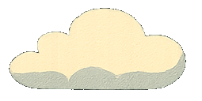
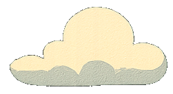
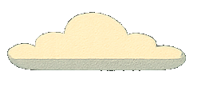

<div class="sky">
  
  
  
  <h1>Vintage Story сервер TOPS</h1>
</div>

<nav>
  <button onclick="showSection('links')">Ссылки и настройки</button>
  <button onclick="showSection('commands')">Полезные команды</button>
  <button onclick="showSection('mods')">Полезные моды</button>
  <button onclick="showSection('cities')">Города и навигация</button>
  <button onclick="showSection('places')">Интересные места</button>
</nav>

<div class="frame">
  <div class="frame-top"></div>
  <div class="frame-middle">
    <div class="frame-side left"></div>
    <div class="frame-content" id="content-container">
      <div id="content">
        <p>Выберите раздел, чтобы увидеть информацию.</p>
      </div>
    </div>
    <div class="frame-side right"></div>
  </div>
  <div class="frame-bottom"></div>
</div>

<style>
body {
  background-image: url("img/pixel-horizon-bg.png");
  background-size: cover;
  background-repeat: no-repeat;
  background-attachment: fixed;
  margin: 0;
  padding: 0;
}

.sky {
  height: 150px;
  position: relative;
  display: flex;
  align-items: center;
  justify-content: center;
  background: transparent;
}

.sky h1 {
  font-size: 2em;
  padding: 0.5em 1em;
  background-color: rgba(0, 0, 0, 0.5);
  color: #fff3c1;
  border-radius: 10px;
  text-align: center;
  position: relative;
  z-index: 2;
}

.cloud {
  position: absolute;
  top: 0;
  width: 96px;
  opacity: 0.8;
  z-index: 1;
}

.cloud1 {
  left: 5%;
  animation: cloudmove1 60s linear infinite;
}
.cloud2 {
  left: 25%;
  animation: cloudmove2 80s linear infinite;
}
.cloud3 {
  left: 55%;
  animation: cloudmove3 100s linear infinite;
}

@keyframes cloudmove1 {
  0% { transform: translateX(0); }
  100% { transform: translateX(200vw); }
}
@keyframes cloudmove2 {
  0% { transform: translateX(0); }
  100% { transform: translateX(200vw); }
}
@keyframes cloudmove3 {
  0% { transform: translateX(0); }
  100% { transform: translateX(200vw); }
}

nav {
  display: flex;
  flex-wrap: wrap;
  justify-content: center;
  background-color: rgba(0, 0, 0, 0.5);
  padding: 1em;
  gap: 1em;
}

nav button {
  background: linear-gradient(to bottom, #8b5e3c, #5a3925);
  border: 3px solid #3b2416;
  padding: 0.5em 1.5em;
  font-size: 1em;
  color: #fcefc1;
  font-weight: bold;
  cursor: pointer;
  border-radius: 10px;
  box-shadow: 0 3px #2d1b10;
  text-shadow: 1px 1px #3b2416;
}

.frame {
  position: relative;
  display: flex;
  flex-direction: column;
  align-items: stretch;
  width: 864px;
  margin: 2em auto;
  opacity: 1;
  transition: opacity 0.3s ease;
}

.frame-top {
  height: 32px;
  background-image: url('img/top.png');
  background-repeat: repeat-x;
  position: relative;
}

.frame-bottom {
  height: 32px;
  background-image: url('img/top.png');
  background-repeat: repeat-x;
  transform: scaleY(-1);
  position: relative;
}

.frame-middle {
  display: flex;
  flex-direction: row;
  background-color: #fef8e0;
}

.frame-side.left {
  width: 32px;
  background-image: url('img/left.png');
  background-repeat: repeat-y;
}

.frame-side.right {
  width: 32px;
  background-image: url('img/left.png');
  background-repeat: repeat-y;
  transform: scaleX(-1);
}

.frame-content {
  width: 800px;
  padding: 2em;
  font-family: 'Georgia', serif;
  font-size: 1.2em;
  text-align: center;
  box-sizing: border-box;
}
.frame-top::before, .frame-top::after, .frame-bottom::before, .frame-bottom::after {
  content: "";
  width: 32px;
  height: 32px;
  background-image: url('img/corner-topleft.png');
  background-size: cover;
  position: absolute;
  top: 0;
  z-index: 2;
}

.frame-top::before {
  left: 0;
}
.frame-top::after {
  right: 0;
  transform: scaleX(-1);
}
.frame-bottom::before {
  left: 0;
  bottom: 0;
  transform: scaleY(-1);
}
.frame-bottom::after {
  right: 0;
  bottom: 0;
  transform: scale(-1, -1);
}
</style>

<script>
  const sections = {
    links: {
      text: `Ты новенький на сервере и не знаешь, что делать? В начале используй команду для добавления русского чата и настрой его: <br>
      <code>/group join russian</code><br>
      Изменения размера чата для удобства переключения между вкладками: <br>
      <code>.chatsize 800 400</code><br>
      Отключаем переключение на главный чат: <br>
      Отключаем "Автопоказ чата" в Настройки -> Интерфейс<br><br>
      Затем можно добавиться в самое крупное РУ сообщество на этом сервере: <br>
      <a href="https://t.me/mylesvintagestory" target="_blank">https://t.me/mylesvintagestory</a><br><br>
      Также полезные ссылки:<br>
      Карта: <a href="https://map.tops.vintagestory.at/?x=-1&y=17&zoom=10" target="_blank">ссылка</a><br>
      Навигатор: <a href="https://herrscher-of-sleeping.github.io/tl-navigator/" target="_blank">ссылка</a>`
    },
    commands: {
      text: `Смена класса с перезарядкой в реальные полгода:<br><code>.charsel</code>`
    },
    mods: {
      text: `Перевод сообщений в чате:<br><a href="https://mods.vintagestory.at/chattranslator" target="_blank">Chat Translator</a><br><br>
      Показывает список игроков и их пинг на Tab:<br><a href="https://mods.vintagestory.at/playerlist" target="_blank">Player List</a><br><br>
      Добавляет возможность смотреть все приваты игроков (по умолчанию на R англ.):<br><a href="https://mods.vintagestory.at/claimsradar" target="_blank">Claims Radar</a><br><br>
      Больше информации, от времени горения угольной ямы до информации у какого торговца что и за сколько продается:<br><a href="https://mods.vintagestory.at/extrainfo" target="_blank">Extra Info</a>`
    },
    cities: {
      text: `Ты должен решить для себя, что тебе интереснее — проходить игру в одиночку или же найти себе город и развиваться в социуме, используя торговлю на максимум. Если тебе интересно играть с живыми людьми, то вот список живых поселков с РУ игроками.<br><br><ul><li>Бронзовый город</li><li>Желтые высоты</li><li>Аграба</li><li>Эребор</li></ul>`
    },
    places: {
      text: `<code>/waypoint addati gear 524 110 437 false #FF0000 Evangeлисткий храм</code><br><code>/waypoint addati gear -776 110 17047 false #FF0000 Музей диковин</code>`
    }
  };

  function showSection(key) {
    const section = sections[key];
    const contentContainer = document.getElementById('content-container');
    const contentEl = document.getElementById('content');
    contentContainer.style.opacity = 0;
    setTimeout(() => {
      contentEl.innerHTML = `<p>${section.text}</p>`;
      contentContainer.style.opacity = 1;
    }, 200);
  }
</script>
